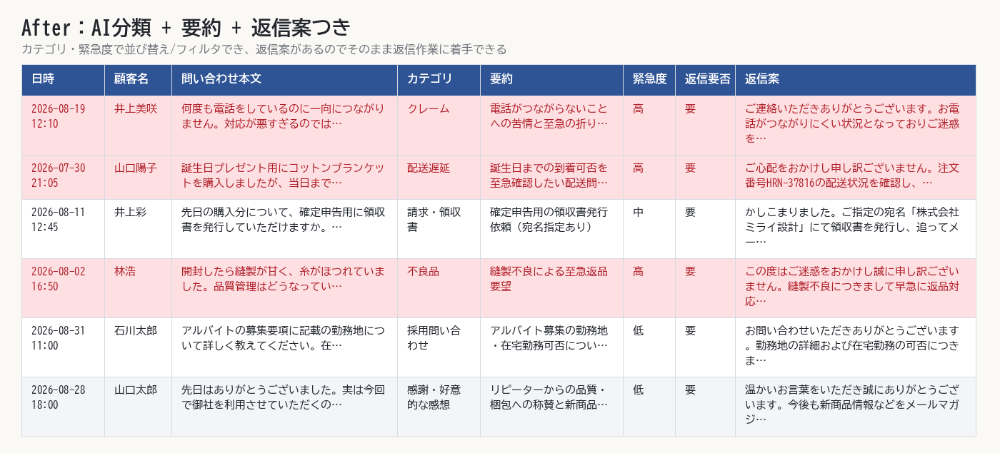

問い合わせ・自由記述のAI分類→Excel化
CSVで並んでいるだけの問い合わせ100件→AIがカテゴリ・要約・優先度・返信案まで付与したExcelに（数分）
問い合わせ本文をAIに渡し、カテゴリ・要約・緊急度・返信要否・返信案の5項目を自動付与します。ヘッダー装飾・オートフィルタ・緊急度「高」の行の色付けまで済んだExcel（分類結果・集計・実行ログの複数シート）として出力し、担当者は上から順に対応するだけの状態にします。
Input
100件
問い合わせ本文のCSVをそのまま入力
AI分類
5項目
カテゴリ・要約・緊急度・返信要否・返信案
Excel
3シート
分類結果・集計・実行ログ
100件
処理した問い合わせ件数
11カテゴリ
自動分類したカテゴリ数
3シート
構成された出力Excel
数分
分類〜Excel完成までの目安

分類後のExcel（分類結果シート）のプレビュー
| 日時 | 顧客名(架空) | 問い合わせ本文 |
|---|---|---|
| 2026-08-19 12:10 | 井上美咲 | 何度も電話をしているのに一向につながりません。対応が悪すぎるのではないでしょうか… |
| 2026-07-30 21:05 | 山口陽子 | 誕生日プレゼント用にコットンブランケットを購入しましたが、当日までに届くか心配で… |
| 2026-08-11 12:45 | 井上彩 | 先日の購入分について、確定申告用に領収書を発行していただけますか。宛名は「株式会… |
| 2026-08-02 16:50 | 林浩 | 開封したら縫製が甘く、糸がほつれていました。品質管理はどうなっているのでしょうか… |
| 2026-08-31 11:00 | 石川太郎 | アルバイトの募集要項に記載の勤務地について詳しく教えてください。在宅勤務は可能で… |
| 2026-08-09 17:55 | 橋本直樹 | 届いたアロマキャンドルセットに大きなひび割れがありました。梱包の時点で破損してい… |
| 2026-08-28 18:00 | 山口太郎 | 先日はありがとうございました。実は今回で御社を利用させていただくのは3回目になる… |
| 2026-07-18 16:55 | 小林さくら | 檜のまな板を購入しましたが色味がイメージと違いました。返品は可能でしょうか。手続… |
| 日時 | 顧客名(架空) | 問い合わせ本文 | カテゴリ | 要約 | 緊急度 | 返信要否 | 返信案 |
|---|---|---|---|---|---|---|---|
| 2026-08-19 12:10 | 井上美咲 | 何度も電話をしているのに一向につながりません。対応が悪すぎるのではないでしょうか… | クレーム | 電話がつながらないことへの苦情と至急の折り返し要請 | 高 | 要 | ご連絡いただきありがとうございます。お電話がつながりにくい状況となっておりご迷惑… |
| 2026-07-30 21:05 | 山口陽子 | 誕生日プレゼント用にコットンブランケットを購入しましたが、当日までに届くか心配で… | 配送遅延 | 誕生日までの到着可否を至急確認したい配送問い合わせ | 高 | 要 | ご心配をおかけし申し訳ございません。注文番号HRN-37816の配送状況を確認し… |
| 2026-08-11 12:45 | 井上彩 | 先日の購入分について、確定申告用に領収書を発行していただけますか。宛名は「株式会… | 請求・領収書 | 確定申告用の領収書発行依頼（宛名指定あり） | 中 | 要 | かしこまりました。ご指定の宛名「株式会社ミライ設計」にて領収書を発行し、追ってメ… |
| 2026-08-02 16:50 | 林浩 | 開封したら縫製が甘く、糸がほつれていました。品質管理はどうなっているのでしょうか… | 不良品 | 縫製不良による至急返品要望 | 高 | 要 | この度はご迷惑をおかけし誠に申し訳ございません。縫製不良につきまして早急に返品対… |
| 2026-08-31 11:00 | 石川太郎 | アルバイトの募集要項に記載の勤務地について詳しく教えてください。在宅勤務は可能で… | 採用問い合わせ | アルバイト募集の勤務地・在宅勤務可否についての質問 | 低 | 要 | お問い合わせいただきありがとうございます。勤務地の詳細および在宅勤務の可否につき… |
| 2026-08-09 17:55 | 橋本直樹 | 届いたアロマキャンドルセットに大きなひび割れがありました。梱包の時点で破損してい… | 不良品 | アロマキャンドルセットが破損して到着、交換か返金を希望 | 高 | 要 | この度は破損した商品をお届けしてしまい、大変申し訳ございません。注文番号HRN-… |
| 2026-08-28 18:00 | 山口太郎 | 先日はありがとうございました。実は今回で御社を利用させていただくのは3回目になる… | 感謝・好意的な感想 | リピーターからの品質・梱包への称賛と新商品案内の要望 | 低 | 要 | 温かいお言葉をいただき誠にありがとうございます。今後も新商品情報などをメールマガ… |
| 2026-07-18 16:55 | 小林さくら | 檜のまな板を購入しましたが色味がイメージと違いました。返品は可能でしょうか。手続… | 返品・交換 | 檜のまな板の色味がイメージと違い、返品方法を知りたい | 中 | 要 | ご期待に沿えず申し訳ございません。返品を承ることが可能ですので、手続き方法につき… |
カテゴリ別集計
| カテゴリ | 件数 |
|---|---|
| 配送遅延 | 17 |
| 返品・交換 | 12 |
| 不良品 | 11 |
| 使い方の質問 | 11 |
| 感謝・好意的な感想 | 9 |
| その他 | 9 |
| 予約変更 | 8 |
| 請求・領収書 | 7 |
| 営業・売り込み | 6 |
| クレーム | 5 |
| 採用問い合わせ | 5 |